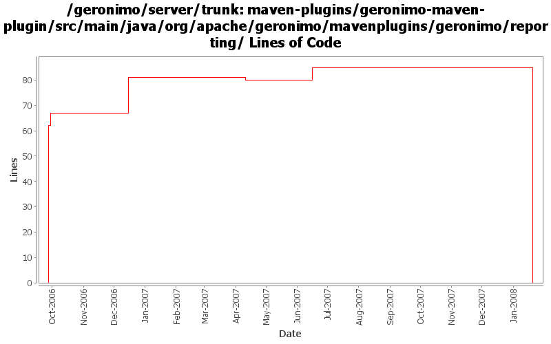

[root]/maven-plugins/geronimo-maven-plugin/src/main/java/org/apache/geronimo/mavenplugins/geronimo/reporting

| Author | Changes | Lines of Code | Lines per Change |
|---|---|---|---|
| Totals | 18 (100.0%) | 178 (100.0%) | 9.8 |
| jdillon | 12 (66.7%) | 79 (44.4%) | 6.5 |
| kevan | 4 (22.2%) | 60 (33.7%) | 15.0 |
| prasad | 2 (11.1%) | 39 (21.9%) | 19.5 |
(GERONIMO-3771) Moved maven-plugins/* to buildsupport/*, updated groupId to org.apache.geronimo.buildsupport
0 lines of code changed in 4 files:
Make some files canonical
8 lines of code changed in 1 file:
Fix formating
2 lines of code changed in 1 file:
* a failed deployment would stop the tests for everybody.
* stopOnFailure config option will now let the tests proceed even if one bad deployment took place.
36 lines of code changed in 1 file:
GERONIMO-2537 Update the src headers in the non-module files. They need to be compliant with the new ASF src header and copyright policy (http://www.apache.org/legal/src-headers.html). I also did some cleanup of the src headers and tried to get them in a consistent format
60 lines of code changed in 4 files:
renamed getGoalName to getFullClassName to refelect the previous change.
3 lines of code changed in 1 file:
Fixed debug log NPE when no reporters are configured
6 lines of code changed in 1 file:
Remove invalid html tag, causes plugin reports to puke
1 lines of code changed in 1 file:
(GERONIMO-2419) Enabling logging for start-server, hooked up reporters API for exception handling, Adding a Surefire reporter which will output reports in a surefire manner, so we can re-use the surefire html report fluff to visualize
Massaged from reporters.patch by Prasad
62 lines of code changed in 4 files: